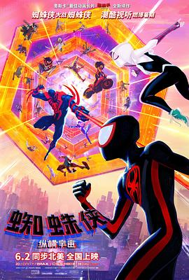

8.5
蜘蛛侠：纵横宇宙
Spider-Man: Across the Spider-Verse
2023
美国
评分 8.5
导演:
乔伊姆·多斯·桑托斯 / 凯普·鲍尔斯 / 贾斯汀·汤普森
演员:
沙梅克·摩尔 / 海莉·斯坦菲尔德 / 奥斯卡·伊萨克 / 杰克·约翰逊 / 伊萨·雷 / 马赫沙拉·阿里 / 詹森·舒瓦兹曼
类型:
冒险,动作,科幻
剧情简介
在地球-65，格温肩负着蜘蛛女的使命，却仍深陷好友彼得死亡的阴影之中。她与父亲之间的误解日益加深，每次行动都像在责任与自我之间拉扯。某次追捕任务中，她意外遇见来自其他维度的米格尔·奥哈拉和杰西卡·德鲁。米格尔正试图组建一支跨越多元宇宙的蜘蛛侠突击队，以阻止宇宙结构的持续崩坏。格温被邀请加入，并借此机会逃离自己世界的压力。在跨越维度的过程中，格温来到地球-1610，与迈尔斯再次相遇。迈尔斯正在努力平衡家庭期待与英雄生活，却因秘密和误会让他与父母关系紧张。他渴望加入突击队，希望证明自己，但却因不符合“宇宙稳定规则”而被拒绝。与此同时，一个看似滑稽却危险不断升级的敌人开始威胁多元宇宙的稳定，让迈尔斯逐渐意识到自己卷入的危机远比想象宏大。随着迈尔斯追随格温来到突击队总部，他目睹来自无数宇宙的蜘蛛侠共同守护现实的秩序，也首次面对所谓“蜘蛛侠命运”的残酷真相：每个蜘蛛侠都必须经历失去，这是世界平衡的关键节点。然而，当迈尔斯发现自己的命运也被安排在其中时，他拒绝接受既定的悲剧。突击队因此分崩，各方立场在命运与选择之间碰撞。影片以多维画风、突破想象的构图和深刻情感让每个角色的挣扎更具力量，也将迈尔斯推向一段新的蜕变。